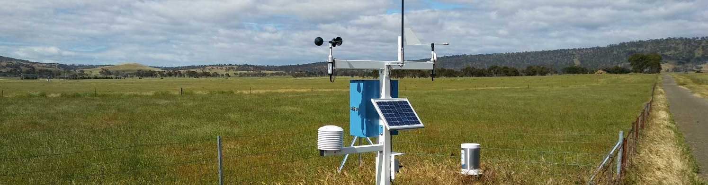

3. Alignment of Payouts with Farmer Losses
Questions
🔍 a. How well does what payouts would have been align with farmer payout expectations based on your chosen index?
Weather-based index insurance verification

The accuracy of a chosen weather-based index can be verified through a simple method developed by the Columbia Climate School together with the 2022 SIPA Capstone team, outlined below.
Source of data: The example uses data from Ethiopia's Genete village collected by the Columbia Climate School, spanning the years 1983 - 2020. The raw data includes satellite rainfall measurements and farmer recollection of bad years, which were used to arrive at index and farmer expected payout values.
Step 1: Identify Index Bad Year Payout based on weather index data
Begin by calculating the would-be payout for each year based on historical weather data and the insurance product's design.
- Use the contract’s trigger variable (e.g., rainfall amount, dry spell duration, or temperature extremes).
- Reference predefined payout thresholds: the trigger point (when payouts begin) and the exit point (when the full payout is due).
-
Use the insurance formula to determine payouts per year based on how the actual weather compares to these thresholds.
-
This step provides the index-based perspective on which years were “bad” enough to justify a payout.
Step 2: Compare Index Bad Year Payout to Farmer Expected Payout
a. Identify Farmer Ranking of Bad Years
- Conduct focus group discussions with farmers from the target area. Through participatory methods, ask farmers to rank years from best to worst in terms of agricultural performance or hardship.
- This process surfaces local knowledge and lived experiences of climate stress.
- Farmers identify years that caused the most financial stress, food insecurity, or crop failure.
b. Calculate Farmer Recollected Bad Year Payout
- Based on the rankings, assign an estimated payout value to each "bad year" identified by farmers. This is a proxy for what farmers would have expected from the insurance had it truly matched their experience.
- For example, a year ranked as the “worst” might correspond to a 100% expected payout; the second-worst might get 75%, and so on.
- This provides the farmer perspective on when support was most needed.
Step 3: Compare Index Bad Year Payout to Farmer Recollected Bad Year Payout
Now compare the index-calculated payouts with the farmer-expected payouts for each year:
- Identify years when both the index and farmers agree—these are “match years.”
- Flag years when the index didn’t trigger a payout despite farmers identifying high losses—these are signs of basis risk (i.e., downside basis risk )
- Also look for years where the index pays, but farmers didn’t report major losses—this may suggest false positives (i.e., upside basis risk )
This comparison helps quantify the accuracy and fairness of the index design.
Step 4: Analyze accuracy and visualize alignment across sources
Summarize the findings using both quantitative metrics and visual tools:
- Calculate:
- Matching Rate – the percentage of years where index payouts matched farmer expectations.
- Average Downside Difference – average difference in years where the index underpaid relative to farmer expectations.
- Create scatter plots to display alignment and mismatches across all years.
- Use these visuals to engage stakeholders—insurance providers, regulators, and farmer organizations—in identifying needed improvements.
This step transforms data into insight: Are payouts happening when they matter most to farmers?
Interpretation
- A high matching rate and low average downside difference indicate a well-aligned index.
- A low matching rate or high average downside difference suggests the need for index refinement or additional support mechanisms.
Note: These metrics should be interpreted in context—what counts as "high" or "low" can vary by case
🔗 Illustrative Verification Sheet
Area-yield index insurance verification
The accuracy of a chosen area-yield index can be verified through a slightly different method, outlined below. Because area-yield indices rely on aggregate data, they can be less precise. To assess accuracy of the index, it's worth comparing area-yield data with both farmer recall of bad years and satellite imagery, allowing for better triangulation.
Source of data: The example uses data from Rwanda's Karongi village collected by One Acre Fund. The raw data includes:
-
average yield data for maize harvested in Season A from 2014-2021 (8 years)
-
farmer recollection of bad years from 1992-2021 (30 years)
-
satellite rainfall measurements from CHIRPS from 1992-2021 (30 years)
Step 1: Identify Yield Bad Year Ranking based on Area-Yield Data
- Start by calculating average yields, often available for only a few years. For example, maize yields in Karongi, Rwanda (2014–2021) were estimated from randomly sampled sites within the district.
- These yields are then ranked from lowest (worst year) to highest (least bad year).
Step 2: Identify Farmer Recollected Bad Year Ranking
Similar to the weather-based index verification process, identify farmer recollection of bad years by asking farmers in Focus Group Discussions what their bad years were from worst to least bad.
Step 3: Identify Satellite Bad Year Ranking
Identify satellite bad year ranking through a process similar to determining the index would-be payout for the weather-based index verification.
- This means taking rainfall or weather measurements, setting a trigger and exit, then arriving at a number that represents the payout that farmers would have gotten for that year as a % of max liability.
- Rank the results from highest (worst) to lowest (least bad).
Step 4: Compare ranking from Area-Yield, Farmer Recollection, and Satellite data
- Convert the average yield and satellite payout values into rankings for comparison across all three data sources.
- In one table, highlight the worst year for each data source.
Note: Data sources have different time periods and methods of collection, so the worst years may not align perfectly.
Step 5: Compare severity / magnitude of event across all three sources in the worst year for average yields
- Convert the figures into severity / magnitude of the event for that year by dividing the rank by the number of years available (e.g., in 2019, the magnitude of the event is 1 in 8 or 0.125)
- Check that the severity / magnitude of the event is similar across data sources for the worst year in terms of average yield
Note: This simplified method is less effective for identifying similarities in the 2nd, 3rd, and subsequent worst years.
Interpretation
To assess accuracy, generate two high-level metrics:
1. Difference in severity / magnitude of the event between yield data and farmer recall
2. Difference in severity / magnitude of the event between yield data and satellite data
The goal would be for the difference to be close to zero. While simplistic, this method gives some indication of the accuracy of the area-yield index.
Step 6: Conduct sanity checks based on level of yields
As a sanity check to have more confidence in this method and metric, it's best to verify whether the average yield of the worst year matches with farmer experience since average yield data can be rather noisy. This can be done by calculating how often the average yield in the worst year happens (X%) and talking to farmers to see if that squares with their experience. (e.g., Does the average yield such as that of the worst year indeed happen only X% of the time? )